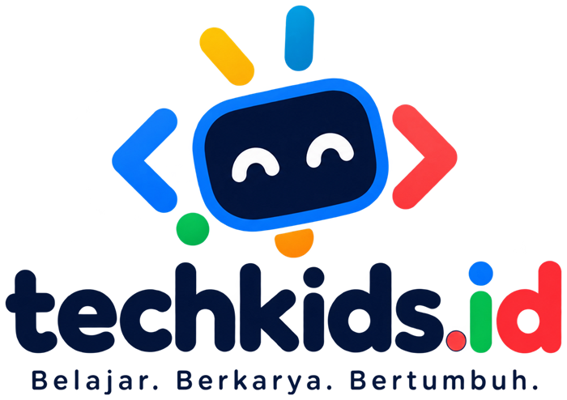

Esensi Brand
Semua keputusan desain dan bahasa berangkat dari empat nilai berikut.
🎮 Seru
Belajar lewat bermain dan membuat karya, bukan menghafal.
🌊 Lokal
Konteks Palembang: Musi, Ampera, songket, pempek.
🤝 Ramah
Aman untuk anak, jelas untuk orang tua, hangat untuk semua.
🚀 Berani
Anak jadi pencipta teknologi, bukan hanya pengguna.
Tagline
Tagline pada logo. Pernyataan pendukung: “Anak Palembang, Pencipta Teknologi Masa Depan”.
Logo
Logo terdiri dari simbol dan wordmark. Simbol adalah wajah robot yang tersenyum, diapit tanda kode < dan >, dengan antena warna-warni. Wordmark ditulis huruf kecil bulat: techkids.id, dengan “.id” berwarna.

Kiri: logo utama bertumpuk (hanya untuk latar putih atau terang). Kanan: versi horizontal dengan teks putih untuk latar gelap.
Simbol saja
Simbol berwarna penuh di latar putih, awan, dan navy. Pakai simbol untuk foto profil, favicon, dan stiker.
Ruang aman & ukuran minimum
- Ruang aman: minimal sebesar tinggi huruf “T” (x) di semua sisi.
- Ukuran minimum logo lengkap: 120 px (layar) / 30 mm (cetak).
- Ukuran minimum simbol: 24 px (layar) / 8 mm (cetak).
Penggunaan yang salah
Jangan diregangkan · jangan ganti warna · jangan taruh di atas latar ramai atau kontras rendah. Jangan juga memutar, memberi bayangan, atau mengubah huruf.
Warna
Palet mengikuti warna pada logo: biru, koral, kuning, dan hijau di atas navy yang tegas. Klik kotak warna untuk menyalin kode HEX.
Warna utama
Warna pendukung
Proporsi pemakaian
Koral hanya untuk hal yang harus diklik atau diperhatikan. Jangan pakai untuk paragraf panjang. Warna pada gambar logo sedikit lebih terang (misalnya merah #FE2B33), jangan diubah. Untuk teks dan tombol di antarmuka pakai kode di atas agar kontrasnya lulus.
Kontras teks (WCAG AA)
4.2:1 — hanya teks besar atau tebal
Lulus (10.8:1)
4.4:1 — teks besar atau tebal (tombol)
Lulus (4.5:1)
Tidak lulus (2.5:1). Pakai teks navy (7.2:1)
Tipografi
Dua huruf gratis dari Google Fonts: Fredoka untuk judul yang bulat dan ceria, Nunito untuk teks yang mudah dibaca anak dan orang tua.
123
Dipakai untuk judul, nama level, angka besar, dan logo.
123
Anak-anak membuat game pertama mereka dalam satu pertemuan.
Dipakai untuk paragraf, tombol, dan keterangan.
Skala ukuran (web)
Cadangan jika font gagal dimuat: system-ui, sans-serif. Untuk dokumen Word/PowerPoint pakai Nunito, atau Calibri jika tidak tersedia.
Suara & Gaya Bahasa
Kami bicara seperti kakak mentor yang sabar dan seru. Ke orang tua, kami jelas dan meyakinkan.
Karakter suara
- Hangat — sapa dengan “Kak” atau “Adik-adik”, bukan “Anda” yang kaku.
- Sederhana — satu ide per kalimat, tanpa istilah teknis yang tidak dijelaskan.
- Semangat — kata kerja aktif: bikin, coba, ciptakan.
- Lokal — boleh selipan Palembang seperti “kito”, “cak mano”, “galak”, secukupnya dan mudah dipahami.
- Jujur — tidak menjanjikan “jadi programmer dalam 1 bulan”.
Contoh
Kata yang dipakai
karya, proyek, mentor, seru, coba, kreator, level, lencana
murid didik, kompetensi, ujian, nilai jelek, gagal, gampang banget
“Halo Kreator Palembang!”
“Cak mano, sudah coding hari ini?”
Maskot: Robot TechKids
Robot berwajah tersenyum dengan bingkai biru dan mata putih yang ceria. Ramah, penasaran, dan selalu siap membantu. Nama maskot belum ditentukan.
- Peran: pemandu di modul, stiker, dan sosial media.
- Kepribadian: ceria, penasaran, suka bertanya “Kalau begini, jadi apa ya?”
- Aturan: wajah selalu navy dengan bingkai biru dan mata putih melengkung senang. Tidak dipakai untuk pesan serius seperti pengumuman biaya atau kebijakan keamanan.
- Ekspresi: senang, berpikir, merayakan, semangat (dibuat oleh ilustrator dari desain dasar ini).
Gambar di atas adalah simbol logo. Variasi ekspresi belum ada dan sebaiknya dikerjakan ilustrator.
Identitas Level
Setiap level punya warna sendiri agar anak dan orang tua mudah mengenali. Warna level dipakai pada sertifikat, lencana, dan modul.
Tunas
Logika dasar, coding tanpa layar, Scratch Jr.
Kreator
Scratch, game, desain, dasar robotik.
Inovator
Python, web, App Inventor, AI dasar.
Lencana
Komponen Antarmuka
Untuk website, landing page, dan materi digital. Sudut membulat, tombol “timbul”, ruang lega.
Tombol
Daftar Trial Gratis Lihat Kurikulum Tanya via WhatsApp
Satu tombol oranye per layar. Sudut penuh (pill), teks 16 px tebal.
Label & status
Tunas Kreator Inovator Beasiswa Kuota Terbatas
Pil dengan latar pucat dan teks pekat dari warna yang sama.
Prinsip tata letak
- Sudut: radius 18 px untuk kartu, penuh untuk tombol dan label.
- Jarak: kelipatan 8 px; ruang kosong lebih baik daripada padat.
- Foto: anak sedang berkarya dengan ekspresi asli. Wajah anak hanya dengan izin tertulis orang tua.
- Ilustrasi: bentuk sederhana, garis tebal, warna dari palet. Motif gelombang Musi atau pola songket boleh jadi pembatas bagian.
- Aksesibilitas: kontras minimal AA, ukuran teks minimal 16 px, jangan mengandalkan warna saja untuk makna.
Sosial Media
Tiga template dasar untuk Instagram (1:1). Tiap unggahan punya satu pesan, satu warna latar, dan logo kecil.
Game “Tangkap Pempek” karya Rara, 10 tahun!
Berapa lama screen time yang sehat untuk anak SD?
Trial gratis Scratch! Sabtu, 10.00 WIB. Kuota 10 anak.
Aturan singkat
- Handle: @techkids.id di semua platform.
- Tagar: #TechKidsID #AnakPalembangBisaCoding #BelajarCodingPalembang
- Frekuensi awal: 3–4 unggahan per minggu, campur karya murid, tips, dan info kelas.
- Keamanan: jangan tampilkan nama lengkap, sekolah, atau alamat anak.